흐린 위성 컬러 영상을 선명하게 만드는 팬샤프닝 연구입니다. 특히 학습에 쓰지 않은, 처음 보는 위성에서도 다시 학습하지 않고 정확한 결과를 내는 데 집중했습니다. 아래로 스크롤하면 발표 화면이 한 단계씩 넘어가고, 그 단계의 설명이 여기에 나옵니다.
프로젝트 요약
SSA-MRN을 개선한 팬샤프닝 모델 SMOC
고해상도 흑백 위성영상(PAN)과 저해상도 다중분광영상(MS)을 합쳐 고해상도 컬러 영상을 복원합니다. 2025년에 공개된 오픈소스 모델 SSA-MRN을 재현한 뒤 구조·학습·추론을 바꿔, 학습한 위성에서는 최신 모델 수준, 학습하지 않은 위성에서는 비교한 모델 중 가장 정확한 모델 SMOC를 만들었습니다.
+3.42 dB처음 보는 위성 WV2
원본 대비 PSNR
원본 대비 PSNR
+0.93 dBQB · 원본 대비
3시드 평균
3시드 평균
+2.93 dBGF2 · 원본 대비
3시드 평균
3시드 평균
+1.57 dBWV3 · 원본 대비
3시드 평균
3시드 평균
- 역할
- 팀장 · 연구 방향과 모델 개선 실험 주도, 결과 비교 사이트 제작
- 기간
- 2026.09 — 2026.11 · 동국대학교 종합설계1
- 기술
- PyTorch · 위성영상 처리 · MATLAB 평가(DLPan-Toolbox) · GitHub Actions · 정적 웹 뷰어
- 규모
- 성능 개선 실험 90여 건 · 다른 팬샤프닝 모델 5종 재평가 · 생성형 모델 2종 비교
위성영상은 지도, 재난 대응, 농업, 환경 감시에 쓰이고, 이때 중요한 것은 두 가지입니다.
첫째는 경계입니다. 무너진 건물이나 끊긴 도로를 찾으려면 경계가 선명해야 합니다.
둘째는 색입니다. 작물 상태나 토지 종류는 파장별 밝기, 즉 색으로 구분하기 때문에 색이 정확해야 합니다.
얼마나 선명해야 할까요? 2026년 보도에 따르면 정부 기관이 원하는 수준은 차 한 대를 구분하는 30cm급입니다. 학습에 쓴 GaoFen-2 위성의 흑백 영상은 한 칸이 0.8m라 공장 지붕의 무늬까지 보입니다.
하지만 같은 곳의 컬러 영상은 한 칸이 3.2m라, 파란 지붕이 뭉개진 색 덩어리로만 보입니다.
두 장은 같은 위성이 같은 곳을 함께 찍은 영상입니다. 흑백 영상은 빛을 파장 구분 없이 한꺼번에 받습니다.
이것이 PAN(Panchromatic)입니다. 받는 빛이 많아 한 칸을 작게 만들 수 있으므로 선명합니다. 반면 컬러 영상은 빛을 파랑·초록·빨강·근적외선처럼 색별로 나눠 받습니다.
이것이 MS(Multi Spectral)입니다. 한 칸에 들어오는 빛이 적어 칸이 커야 하고, 그래서 가로세로 네 배 흐립니다.
팬샤프닝
두 장의 장점만 합칩니다
+
경계
PAN에서
색
MS에서

경계 + 색
선명한 컬러
두 장의 장점을 합치는 기술이 팬샤프닝입니다. PAN에서 경계를, MS에서 색을 가져옵니다.
그러면 흑백만큼 선명하고 색도 정확한 컬러 영상이 됩니다. 오른쪽은 이 연구의 모델 SMOC로 만든 결과입니다.
왜 딥러닝 모델일까
그럴듯해 보여도, 확대하면 디테일이 무너집니다
정답
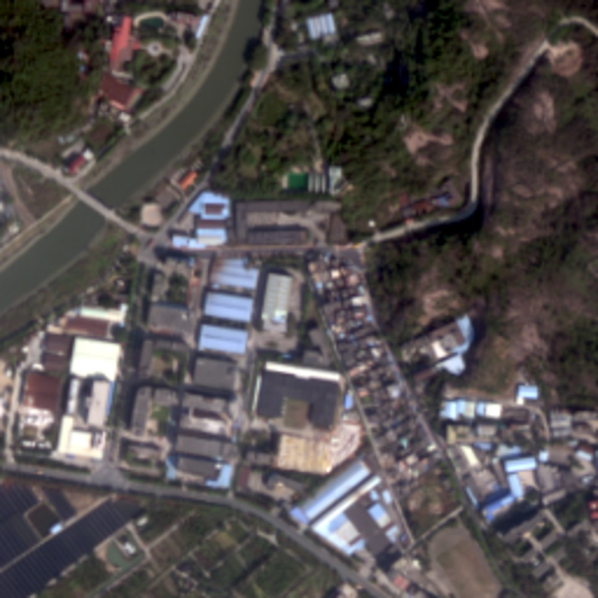
우리 모델
GPT Image 2.6

Nano Banana 2.1
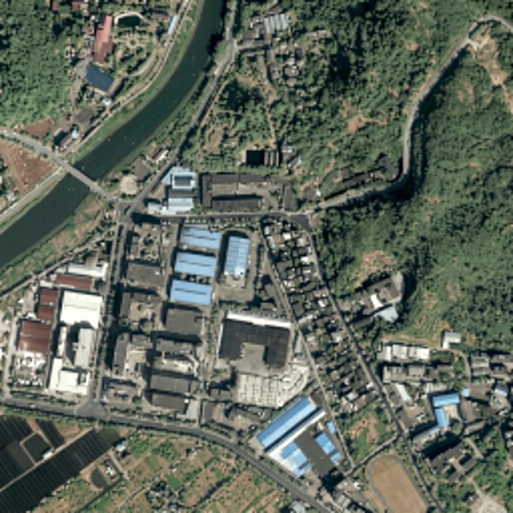
그대로
녹지·길이 사라짐
녹지·길이 사라짐
생성형 AI도 영상을 잘 만드는데, 왜 딥러닝 팬샤프닝 모델일까요? 같은 입력을 GPT Image 2.6과 Nano Banana 2.1에 넣어 비교했습니다. 왼쪽부터 정답, 우리 모델, 두 생성형 모델이고, 얼핏 보면 생성형 결과가 더 선명해 보입니다.
왼쪽 아래를 두 배로 확대해 보겠습니다.
정답과 우리 모델에는 건물 사이 녹지와 논밭 사이 길이 그대로 있지만, GPT는 녹지를 회색 바닥으로 바꾸고 길을 지웠고, Nano Banana는 논밭을 전혀 다른 모양으로 그렸습니다. 없는 것을 그려 넣는 할루시네이션입니다. RGB 세 밴드 PSNR도 우리 모델 42.1 dB, 생성형 30.1·25.5 dB였습니다. 그래서 입력에 있는 정보만 쓰는 모델이 필요합니다.
국내 위성의 현실
해외 데이터로 배운 모델, 우리 위성엔 쓰기 어렵습니다
국내
민간 위성 5m급
데이터 부족
보안 규제
→ 쓸 수 있는 데이터가 적음
해외
중국 등 활발한 연구
공개 데이터셋 다수
→ 방대한 해외 데이터로 학습
원본 SSA-MRN
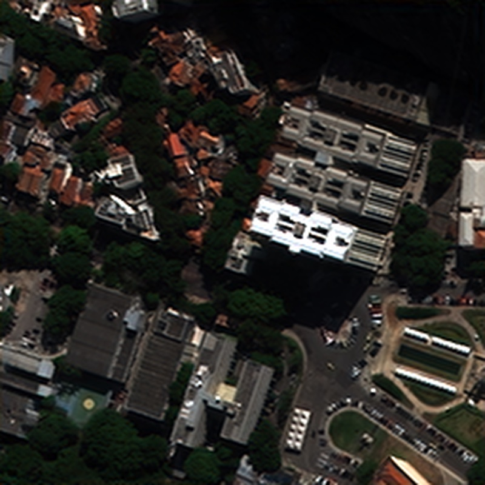
선명
학습한 위성 · WV3

흐림
처음 보는 위성 · WV2
머니투데이 2026.7 · 조선비즈 2026.9 · 매일일보 2026.2 · PanCollection (중국 UESTC 공개)
국산 위성은 어떨까요?
국내 민간 위성은 5m급으로 선명도가 낮고, 고해상도 영상은 보안 규제로 학습에 쓰기 어렵습니다. 2026년에는 국내 위성 기업 대표가 영상을 한 장도 팔지 못했다고 말하기도 했습니다.
반면 중국 등 해외는 연구가 활발하고, 이 연구에서 쓴 PanCollection도 중국 대학이 공개한 해외 위성 데이터입니다. 대부분의 모델이 이런 해외 데이터로 학습됩니다.
문제는 학습하지 않은 위성에 쓰면 성능이 떨어진다는 점입니다. 원본 SSA-MRN을 WorldView-3로 학습해 WorldView-2에 쓰면 흐려지고 색이 7% 넘게 치우칩니다. 우리 위성도 마찬가지일 수 있어, 처음 보는 위성에서도 정확한 모델이 필요합니다. 그래서 2025년에 공개된 오픈소스 모델 SSA-MRN을 재현하고, 이를 바탕으로 개선했습니다.
데이터 · PanCollection 공개 데이터셋
위성 네 종류로 실험했습니다
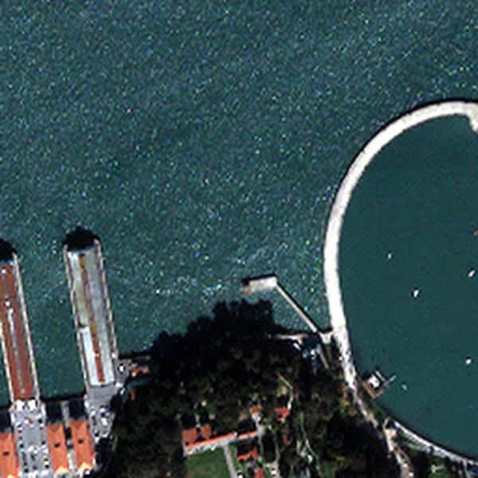
QB
QuickBird · 4밴드
학습 · 평가
GF2
GaoFen-2 · 4밴드
학습 · 평가

WV3
WorldView-3 · 8밴드
학습 · 평가
WV2
WorldView-2 · 8밴드
학습 안 함
데이터는 공개 데이터셋 PanCollection을 썼고, QB·GF2·WV3로 학습하고 평가했습니다. 평가는 영상을 4분의 1로 줄여 복원한 뒤 원래 영상과 PSNR·SAM·ERGAS로 비교하는 RR 방식이고, 세 시드(42·43·44) 평균으로 판정했습니다.
WV2는 학습에 쓰지 않고, WV3로 학습한 모델을 그대로 적용해 처음 보는 위성에서의 성능을 확인했습니다.
모델의 이름은 Scale-Mixed, Observation-Consistent의 앞 글자를 땄습니다.
SMOC, 에스목입니다.
SM은 축척 혼합 학습입니다. 원래 크기와 두 배 거친 학습 쌍을 섞어 배워, 해상도가 달라져도 세부를 알맞은 만큼 넣습니다.
OC는 관측 일치 보정입니다. 결과를 다시 줄였을 때 입력과 정확히 같아지도록 마지막에 맞춥니다.
SMOC의 주 개선은 처음 보는 위성에서의 일반화입니다. 회색 상자가 원본 SSA-MRN의 흐름이고, 색 번호가 주 개선, 회색 번호가 보조 개선입니다. 점선 번호는 학습할 때만 바뀌는 부분입니다.
주 개선은 세 문제를 푼 것입니다. 처음 보는 위성에서 없는 무늬를 그려 넣는 문제는 두 크기를 함께 학습해(②) 막았고, 결과의 색이 입력에서 어긋나는 문제는 관측 일치 보정(④)으로, 위성마다 밴드 밝기 비율이 달라 흐려지는 문제는 밴드별 밝기 보정(⑦)으로 풀었습니다. 그 결과 재학습 없이 처음 보는 위성에서 원본보다 3.4 dB 높습니다.
나머지 넷(①⑤③⑥)은 학습한 위성의 정확도와 모델 크기를 다듬은 보조 개선입니다. 아래 전체 구조도에서 각 번호가 실제로 어디에 들어가는지 볼 수 있습니다.
SMOC 구조도
실제로 적용한 전체 구조
주황색이 원본 SSA-MRN에 더한 부분입니다. (a) 초기 특징과 backbone, (b) 전체·1/2·1/4 크기에서 밴드별 SSAI 융합, (c) 작은 크기부터의 단계적 복원과 관측 일치 사영, (d) SSAI 블록 내부, (e) 축척 혼합 학습입니다.

| 개선 | 바꾼 곳 | 푼 문제 | 효과 | |
|---|---|---|---|---|
| ② | 축척 혼합 학습 | 학습 | 처음 보는 위성에서 없는 무늬를 그려 넣음 | WV2 +1.3 dB |
| ④ | 관측 일치 보정 | 추론 뒤 | 결과의 색·밝기가 입력에서 어긋남 | 관측 오차 15.7 → 0 |
| ⑦ | 밴드별 밝기 보정 | 처음 보는 위성 입력·출력 | 위성마다 밴드 밝기 비율이 달라 흐려짐 | WV2 약 +2 dB |
| ① | 넓게 보는 가지(W2) | 구조 | 원본 backbone의 좁은 수용 영역 | RR +0.70 dB |
| ⑤ | 위성 방식 축소·확대 | 구조(파라미터 없음) | 모델 안 축소가 데이터 생성 방식과 다름 | +0.04-0.24 dB |
| ③ | 분광 손실 | 학습 | 색 오차(SAM)가 큼 | SAM 60/60장 감소 |
| ⑥ | 분해 후 감쇠 | 학습 일정 | 병렬 가지로 커진 모델 크기 | 연산 66% |
보조 개선 ① ⑤ · 모델 구조
더 넓게 보고, 위성처럼 줄입니다
①
넓게 보는 가지
특징 추출 후 절반 해상도 가지를 붙임
원래 · 8×8 칸
2×2 합성곱
보폭 2
절반 · 4×4 칸
3×3 → 6×6
같은 3×3 합성곱이 원래 기준 두 배 넓은 범위
⑤
축소·확대를 위성 방식으로
단순 축소 대신 위성 흐림을 거쳐 decimation

원본: 단순 축소
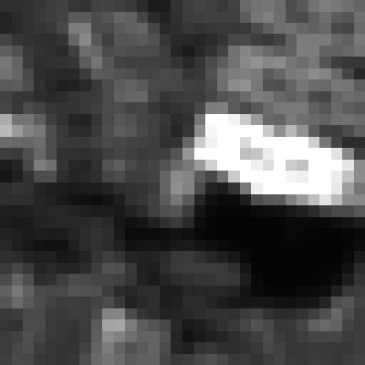
SMOC: 위성 방식
PSNR 학습한 위성 +0.04-0.11 dB · 처음 보는 WV2 +0.24 dB
모델 구조에서는 두 가지를 바꿨습니다. 첫째는 넓게 보는 가지(①)입니다.
2×2 칸을 한 칸으로 묶는 보폭 2의 2×2 합성곱으로 절반 해상도 특징을 만듭니다.
그 위에서 같은 3×3 합성곱을 쓰면 원래 해상도 기준 6×6, 두 배 넓은 범위를 봅니다. 계산할 위치는 4분의 1이라 부담이 적습니다.
둘째(⑤), 모델 안에서 영상을 줄이고 키울 때 단순 축소 대신 위성처럼 센서 MTF로 흐린 뒤 솎아 내고, 23탭 보간으로 키우도록 바꿨습니다. 학습할 파라미터는 늘지 않고, 네 데이터셋 모두 PSNR이 올랐습니다.
보조 개선 ① ⑤ 자세히
더 넓게 보는 가지와 위성 방식의 축소·확대
①넓게 보는 가지 (W2 병렬 가지)
원본 구조는 그대로 두고, 초기 특징 F0(64채널)에서 갈라져 원본 backbone(ResBlock×4)과 나란히 흐르는 가지를 더했습니다. 보폭 2의 2×2 합성곱으로 해상도를 절반으로 접어 128채널로 만들고, 잔차 블록 8개를 거친 뒤 2×2 전치 합성곱(0으로 초기화)으로 펼쳐 backbone 출력에 더합니다.
0으로 초기화했기 때문에 학습을 시작할 때는 원본과 똑같이 동작하고, 필요한 만큼만 가지의 기여가 커집니다.
- 입·출력
- Conv 2×2 s2 64→128 · ConvT 2×2 s2 128→64
- 본체
- ResBlock×8 · 128채널 · H/2×W/2
⑤축소·확대를 위성 방식으로
SSA-MRN은 모델 안에서 PAN을 1/2·1/4로 줄이고 MS를 키울 때 단순 bilinear 보간을 씁니다. 그런데 학습 데이터의 저해상도 영상은 센서 MTF로 흐린 뒤 솎아 내는 방식(Wald 프로토콜)으로 만들어집니다. 둘이 다르면 모델이 받는 축소 영상에 실제 관측에는 없는 자글자글한 잡음이 섞입니다.
모델 안의 고정 축소·확대를 데이터를 만든 연산(MTF 블러 + 솎음, 23탭 보간)으로 바꿨습니다. 필터는 고정값이라 학습할 파라미터가 늘지 않습니다.
- 효과
- 학습한 위성 PSNR +0.04-0.11 dB · 처음 보는 WV2 +0.24 dB
- 근거
- 성능 90번 · 3시드
학습 방법도 두 가지를 다듬었습니다. 손실은 밝기 차이 L1에, 밴드 비율(색)의 방향 차이를 재는 분광 손실(③)을 더했습니다.
분광 손실의 비율 λ는 짧은 학습으로 비교해, PSNR이 가장 높고 색 오차도 줄어드는 1.2로 정했습니다.
거친 쌍의 비율 c는 낮출수록 학습한 위성에서 좋아지지만, 0으로 빼면 처음 보는 WV2에서 1.3 dB 떨어집니다. 그래서 0.25로 정했습니다.
그리고 원래 크기로 120에폭을 충분히 배운 뒤 3×3 합성곱을 가벼운 합성곱 조합으로 나눠(⑥) 30에폭 다듬었습니다. 정확도는 그대로 두고 파라미터를 274만 개에서 187만 개로, 연산량을 66%로 줄였습니다.
보조 개선 ③ ⑥ 자세히
손실 함수와 학습 일정
L = L1(Y, GT) + λ·(1 − cos(Y, GT)) + c·L1(Y′, GT′) λ = 1.2 · c = 0.25
③분광 손실
픽셀마다 밴드 값을 하나의 벡터로 보고, 정답 벡터와 방향이 얼마나 다른지(1 − 코사인 유사도)를 손실에 더했습니다. 밝기는 맞아도 밴드 비율이 틀리면 색이 바뀌는데, SAM이 재는 바로 그 오차입니다.
λ는 0, 0.2, 0.46, 0.8, 1.2, 2로 짧게 학습해 비교했고, PSNR이 가장 높으면서 SAM도 꾸준히 줄어드는 1.2를 골랐습니다.
- 효과
- SAM이 3시드 60/60장에서 감소
⑥충분히 배운 뒤 가볍게 분해
병렬 가지로 파라미터가 274만 개로 늘었습니다. 처음부터 작은 모델로 학습하면 정확도가 떨어지므로, 원래 크기로 학습률 1e-4에서 120에폭을 배운 뒤 합성곱을 나눴습니다.
backbone의 3×3 합성곱(64→64)은 특잇값 분해로 3×3(64→32) + 1×1(32→64), 가지의 3×3(128→128)은 1×1 128→384 · 깊이별 3×3 · 1×1 384→128로 바꾼 뒤 30에폭 동안 학습률을 1e-6까지 코사인 감쇠하며 다듬었습니다.
- 크기
- 파라미터 2,735,418 → 1,873,210개 (원본 426,654개)
- 연산
- 59.6 → 39.1 GMAC (256², 66%)
- 정확도
- 분해 전과 0.04 dB 안에서 같음
주 개선 ② · 축척 혼합 학습
원래 크기와 거친 크기를 함께 보며 배웁니다

원래 크기 · MS 64×64
+
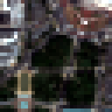
2배 거친 크기 · 32×32
같은 장면을 두 해상도로 함께 학습
거친 영상은 위성처럼 2배 다운샘플링 · □ 오른쪽 확대 위치

한 크기만 배우면
처음 보는 위성에서
없는 무늬까지 그려 넣음

함께 배우면
세부를 알맞은 만큼만 넣음
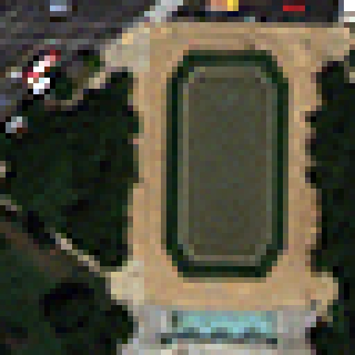
정답
처음 보는 위성 WV2 · PSNR
+1.3 dB
이제 주 개선입니다. 첫째는 축척 혼합 학습(②)입니다. 왼쪽은 실제 입력 MS 64×64이고, 같은 장면을 위성처럼 흐리게 해 두 배 거칠게 만든 32×32 영상을 함께 학습합니다. 주황 상자가 오른쪽에서 확대한 연못입니다.
한 크기로만 배우면 처음 보는 위성에서 없는 무늬를 그려 넣습니다. 연못 둘레에 겹겹의 링 무늬와 갈색 얼룩이 생겼습니다.
두 크기를 함께 배우면 이런 무늬가 사라지고 정답에 가까워지며, WV2에서 PSNR이 1.3 dB 올랐습니다. (WV3로 학습해 WV2 장면 14에 적용, 개선이 가장 큰 곳을 확대한 예입니다.)
주 개선 ② 자세히
축척 혼합 학습: 원인 진단부터 해결까지
- 증상병렬 가지(①)를 붙이자 RR PSNR이 0.70 dB 올랐지만, 한 단계 더 거친 시험(RR2)과 처음 보는 위성에서는 오히려 무너졌습니다.
- 진단학습 없이 가지 출력의 세기만 줄여 보니 거친 시험의 성능이 돌아왔습니다. 원인은 축척에 따라 맞지 않는 세부 주입 세기였습니다. 한 축척에만 맞춰 세부를 세게 넣도록 배운 것입니다. (50번)
- 해결같은 패치에서 2배 거친 학습 쌍을 하나 더 만듭니다. 정답 64×64를 MTF로 흐려 32×32(GT′)로 줄이고, 다시 Wald 4배 관측으로 MS′ 8×8을 만든 뒤 23탭 보간으로 LMS′를 만듭니다. 두 쌍을 같은 가중치의 모델에 넣고 거친 쌍의 손실에 c = 0.25를 곱해 더합니다.
- 결과원본 대비 RR QB +0.873 · GF2 +2.045 · WV3 +1.007 dB(3시드)로 거친 시험의 약점이 사라졌고, 기준 모델(C2MS)로 채택했습니다. c를 0으로 빼면 처음 보는 WV2에서 1.3 dB 떨어집니다. (53번 · 54번)
주 개선 ④ · 관측 일치 보정
결과를 다시 줄여, 입력과 같아지도록 맞춥니다
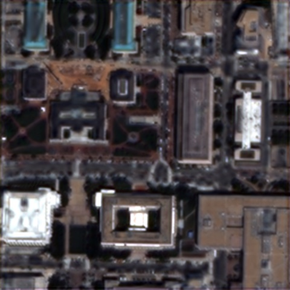
결과 Y
흐림 +
1/4 축소
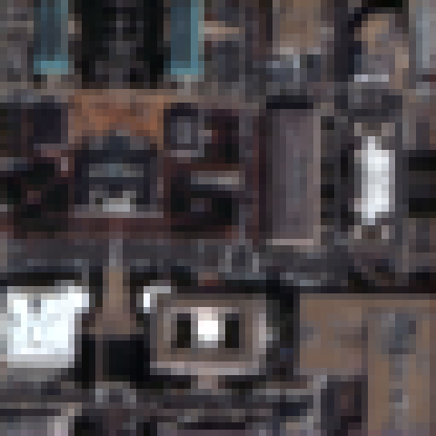
다시 줄인 DY
≠
입력 MS
빼기
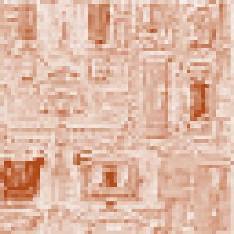
어긋난 만큼
넓힌 차이
+
결과 Y
=

보정된 Ŷ
Ŷ = Y + Dᵀ(DDᵀ)⁻¹ (MS − DY)
D: 위성의 흐림 + 1/4 축소
관측 오차 (DN)
15.7 → 0
PSNR (dB)
+0.04~0.09
입력 컬러
보정 전
보정 후


둘째는 관측 일치 보정(④)입니다. 모델이 만든 결과 Y가 있습니다.
Y를 위성처럼 흐리게 해 4분의 1로 줄이면(DY) 입력 MS와 같아야 하지만, 실제로는 조금 어긋납니다.
둘을 빼면 어긋난 만큼이 나옵니다. 주황색이 어긋난 곳입니다.
이 차이를 원래 크기로 넓혀 결과에 더하면, 다시 줄였을 때 입력과 정확히 맞는 Ŷ가 됩니다.
학습할 값이 없는 후처리이고, 관측 오차가 15.7에서 0이 되며 PSNR도 0.04-0.09 dB 오릅니다.
효과가 가장 잘 보이는 예입니다. 국토위성 1호 영상에 QB로 학습한 모델을 쓰면 파란 지붕이 초록으로 바뀌는데, 관측 일치 보정을 하면 입력의 파란색으로 돌아옵니다.
주 개선 ④ 자세히
관측 일치 사영
Ŷ = Y + Dᵀ(DDᵀ)⁻¹(MS − DY) D: 센서 MTF 블러 + 1/4 솎음
왜 필요한가
팬샤프닝 결과는 다시 위성처럼 관측했을 때(D) 입력 MS와 같아야 합니다. 분광 손실(③)로 색은 좋아졌지만 원래 해상도에서의 관측 일치가 나빠지고 처음 보는 위성에서 흐려지는 부작용이 생겼습니다.
그래서 추론 뒤에 DŶ = MS를 만족하는 영상 중 결과 Y에 가장 가까운 영상으로 옮깁니다. 답을 검산해서 어긋난 부분만 고치는 것과 같습니다.
주 개선 ⑦ · 밴드별 밝기 보정
위성마다 다른 밴드 밝기 비율을 맞췄다가 되돌립니다
밴드 평균 ÷ PAN 평균 · 8개 밴드
SMOC
학습한 위성 WV3
처음 보는 위성 WV2
1
WV2는 밴드 비율이 다름
모델은 WV3 비율에 맞춰 세부를 넣음
2
배율을 곱해 WV3 비율로
입력 통계만 사용 · 정답은 쓰지 않음
3
SMOC로 선명하게
재학습 없음
4
배율을 되돌려 원래 색으로
WV2의 밴드 비율 그대로
WV3로 학습해 WV2에 적용 · 세부 세기 정답 = 1
PSNR 약 +2 dB · 세부 세기 0.52 → 0.70
보정 전
보정 후
정답
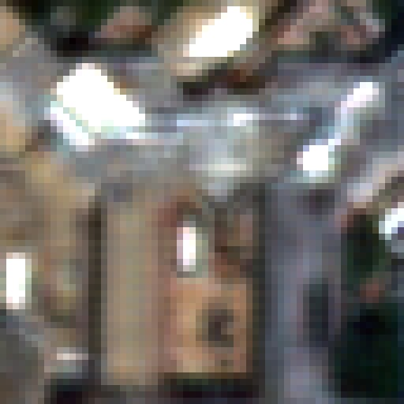
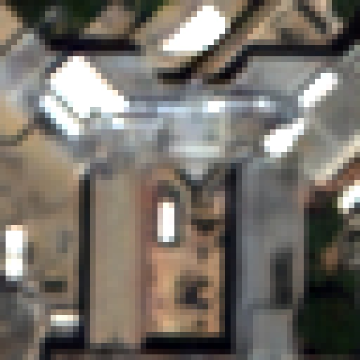

셋째는 밴드별 밝기 보정(⑦)입니다. 청록 막대는 학습한 WV3의 밴드 평균 대 PAN 평균 비율입니다.
처음 보는 WV2는 이 비율이 달라서, WV3 비율에 맞춰 세부를 넣는 모델이 세부를 덜 넣고 결과가 흐려집니다.
그래서 밴드마다 배율을 곱해 WV3 비율로 맞춥니다. 입력의 통계만 쓰고 정답은 쓰지 않습니다.
맞춘 입력을 SMOC로 선명하게 복원합니다. 재학습은 없습니다.
마지막으로 배율을 되돌려 WV2의 원래 밝기 비율로 돌립니다.
재학습 없이 PSNR이 약 2 dB(1.95-2.15) 올랐고, 세부 세기는 0.52에서 0.70으로 정답(1)에 가까워졌습니다. 보정 전에는 건물 윤곽이 뭉개지지만, 보정 후에는 지붕 모서리와 그림자가 정답처럼 또렷합니다.
주 개선 ⑦ 자세히
밴드별 밝기 보정과 SMOC까지의 과정
⑦입력 통계만 쓰는 보정
WV2가 흐려지는 원인을 추적해 보니 모델 구조가 아니라 센서마다 다른 밴드 대 PAN 밝기 비율이었습니다. 모델은 학습 위성의 비율을 기준으로 PAN에서 세부를 얼마나 가져올지 배우기 때문입니다.
새 위성 입력에서 밴드 평균 ÷ PAN 평균을 재고, 학습 위성의 비율과의 차이만큼 배율을 곱해 넣은 뒤, 출력에서 배율을 되돌립니다. 정답도 재학습도 쓰지 않습니다.
- 효과
- WV2 PSNR 약 +2 dB(1.95-2.15) · 세부 세기 0.52 → 0.70
- 근거
- 성능 82번
WV2에서 정답과 비교 test 20장 · 3시드
| 원본 | SMOC | 보정 없이 | |
|---|---|---|---|
| RR PSNR | 28.59 | 32.01 | 29.81 |
| 선명도 (정답 = 1) | 0.33 | 0.54 | 0.41 |
| 세부 상관 | 0.70 | 0.86 | 0.77 |
| 밝기 치우침 (최대 밴드) | 7.2% | 0.1% | 1.3% |
원본에서 SMOC까지
- 10.09원본 SSA-MRN 재현논문 설정 재현, 이후 모든 비교의 기준
- 10월① 병렬 가지 W2RR +0.70 dB, 거친 시험에서 약점
- 10.21② 축척 혼합 학습 → C2MS약점 원인 진단 후 해결, 기준 모델 채택
- 11월③ 분광 손실 + ④ 관측 일치 사영 → C2MS-SP세 위성 모두 3시드 개선, 기준 모델 채택(11.14)
- 11월⑦ 밴드별 밝기 보정처음 보는 위성 흐림의 원인을 찾아 재학습 없이 +2 dB
- 11월⑥ 분해 + 감쇠, λ·c 재탐색연산 66%로 같은 정확도
- 11.24⑤ 위성 방식 축소·확대 → SMOCC2MS-SP 대비 GF2 +0.69, WV3 +0.43 dB, 최종 모델 확정
결과 ① 일반화 · 처음 보는 위성 WV2
처음 보는 위성에서는 가장 정확합니다
원본 SSA-MRN 대비 PSNR 차이 (dB) · WV2 RR test 20장
WV2 장면 15 일부 · 장면 PSNR

원본 SSA-MRN
28.0 dB

SMOC
31.8 dB

정답
색 오차 SAM · WV2
6.25° → 4.95°
먼저 핵심인 일반화입니다. WV3로 학습한 모델을 WV2에 그대로 적용했고, 다른 모델 다섯 개도 같은 데이터와 지표로 다시 평가해 비교했습니다.
SMOC는 원본보다 3.42 dB 올라, 두 번째인 U2Net보다 1.5 dB 높았습니다. 학습한 위성에서는 SMOC와 비슷한 모델들도 처음 보는 위성에서는 크게 뒤처집니다.
확대하면 원본은 흐리고 색이 치우쳤지만, SMOC는 건물과 나무가 정답에 가깝습니다.
색 오차 SAM도 6.25°에서 4.95°로 줄었습니다.
다음은 학습한 위성에서의 정확도입니다.
막대는 원본 대비 PSNR 변화입니다. SMOC는 QB 0.93, GF2 2.93, WV3 1.57 dB 올랐습니다. ADWM과 ARConv가 일부 위성에서 조금 높고, CANNet과 U2Net보다는 모두 높습니다.
즉 학습한 위성에서는 가장 좋은 모델과 0.2 dB 안의 같은 수준입니다.
결과 자세히
원본 대비 개선 (RR test 20장 · 3시드 평균)
| 데이터셋 | 모델 | PSNR (dB) ↑ | SAM (°) ↓ | ERGAS ↓ |
|---|---|---|---|---|
| QB | 원본 SSA-MRN | 37.429 | 4.941 | 4.124 |
| SMOC | 38.364 +0.935 | 4.497 | 3.692 | |
| GF2 | 원본 SSA-MRN | 46.549 | 0.953 | 0.896 |
| SMOC | 49.475 +2.925 | 0.708 | 0.638 | |
| WV3 | 원본 SSA-MRN | 37.536 | 3.494 | 2.571 |
| SMOC | 39.107 +1.571 | 2.864 | 2.127 | |
| WV2 전이 | 원본 SSA-MRN | 28.586 | 6.253 | 5.046 |
| SMOC | 32.006 +3.420 | 4.954 | 3.458 |
학습한 세 데이터셋은 시드별로도 모두 원본보다 높았습니다. WV2는 WV3로 학습한 모델을 학습하지 않은 위성에 그대로 적용한 결과이며 SMOC는 밴드별 밝기 보정을 포함합니다. 다른 모델(ADWM·ARConv·CANNet·U2Net·FusionNet)은 공식 코드와 저자 가중치(없으면 논문 설정으로 직접 학습)로 같은 test를 실제 MATLAB 평가 코드로 채점했습니다. 전체 표는 저장소 README에 있습니다.
결과 ③ 국산 위성 · 국토위성 1호
국토위성 1호 영상에도 재학습 없이 적용했습니다
입력 · 2026-05-22 촬영 · 서울 중구 1.28 km × 1.34 km
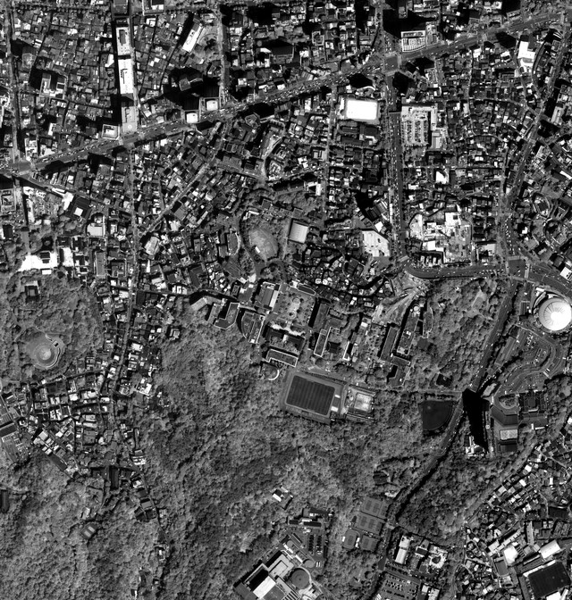
PAN · 흑백 0.5 m


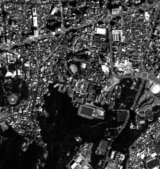
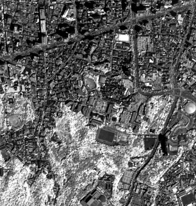
B
G
R
NIR
MS 4밴드 · 2 m
합침

MS 컬러 · 2 m
SMOC
QB로 학습
재학습 없음

SMOC 결과 · 0.5 m 컬러 · 타일 100장 이어 붙임
동국대 확대 · 128 m × 128 m

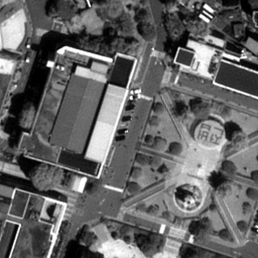
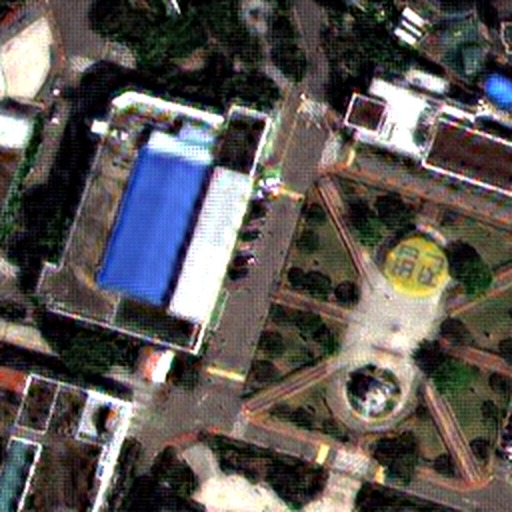
MS 컬러
PAN
SMOC 결과
국산 위성입니다. 국토위성 1호가 2026년 5월에 찍은 서울 동국대 일대입니다. 받은 자료는 0.5 m 흑백 PAN과, 파랑·초록·빨강·근적외선 네 밴드가 따로 담긴 2 m MS입니다. 네 밴드를 합치면 흐린 컬러 영상이 됩니다.
여기에 QB로 학습한 SMOC를 재학습 없이 적용했습니다. 두 영상의 어긋난 위치를 맞추고 밴드별 밝기 보정과 관측 일치 보정을 붙여, 512픽셀 타일 100장을 처리해 이어 붙였습니다.
캠퍼스를 확대하면 컬러는 뭉개져 있고 흑백은 색이 없지만, SMOC 결과는 흑백의 선명한 윤곽에 색이 입혀졌습니다. MS에서는 보이지 않던 팔정도 코끼리상 위의 '전법' 글자도 결과 영상에서 보입니다.
결과 비교 사이트
모든 결과를 장면별로 직접 비교할 수 있습니다

장면별 확대 비교
오차 지도
다른 모델과 나란히
QB · GF2 · WV3 · WV2 전이의 test 장면에서 SMOC, 원본 SSA-MRN, 다른 모델, 정답을 나란히 봅니다.
결과 비교 사이트 열기 →모든 결과는 결과 비교 사이트에서 장면별로 확대해 직접 비교할 수 있습니다. 데이터셋과 장면을 고르면 SMOC, 원본 SSA-MRN, 다른 모델, 정답과 오차 지도를 나란히 보여 줍니다.
사업화 가능성입니다.
고객은 국토위성·아리랑·민간 소형위성 영상을 처리하고 판매하는 국내 기업과 공공기관입니다.
문제는 새 위성은 학습 데이터가 없고, 보안 규제로 모으기도 어렵다는 점입니다.
SMOC는 재학습 없이 처음 보는 위성에서 원본보다 3.4 dB 정확하고, 국토위성 1호에도 그대로 적용했습니다.
보안망 안에 설치하는 소프트웨어나, 영상을 올리면 결과를 돌려주는 API로 제공할 수 있습니다.
특허 후보는 처음 보는 위성에 재학습 없이 쓰는 절차입니다. 밴드 대 PAN 비율을 재고, 배율을 곱해 학습 위성에 맞추고, SMOC로 복원한 뒤, 되돌리고 관측 일치 보정을 합니다.
처음 보는 위성에 대응하려는 연구와 특허는 이미 있습니다. ICCV 2025의 UniPAN, AAAI 2026의 SWIFT, 그리고 중국 특허 두 건입니다. 하지만 모두 분포를 바꾼 데이터나 새 위성 데이터, 여러 위성 데이터로 모델을 다시 학습해야 합니다.
이 절차는 이미 학습된 모델을 그대로 쓰고, 입력의 밝기 비율만 사용하며, 결과를 되돌린 뒤 관측 일치 보정으로 입력과 맞춥니다. 세 전이 쌍 모두에서 1.6-2.3 dB 올랐습니다. 단계 하나하나는 알려진 기술이라 청구 대상은 이 네 단계의 결합입니다.
논문과 특허 검색에서 같은 결합은 찾지 못했고, 첫 공개가 2026년 11월 14일이라 공지예외 주장으로 1년 안에 국내 출원할 수 있습니다.
앞으로의 계획입니다.
설치만 하면 위성 영상을 넣어 바로 팬샤프닝할 수 있고 인터넷이 없는 보안망에서도 쓰는 소프트웨어, 영상을 올리면 선명한 컬러 영상을 돌려주는 API, 그리고 처음 보는 위성에 쓰는 절차의 특허 출원입니다.
정리하면, SMOC는 학습한 위성에서 최신 모델 수준이고, 처음 보는 위성에서는 원본보다 3.4 dB 높아 비교한 모델 중 가장 정확했습니다. 학습 데이터를 모아 다시 학습할 필요가 없으니, 새 위성도 바로 선명한 컬러 영상으로 쓸 수 있습니다.